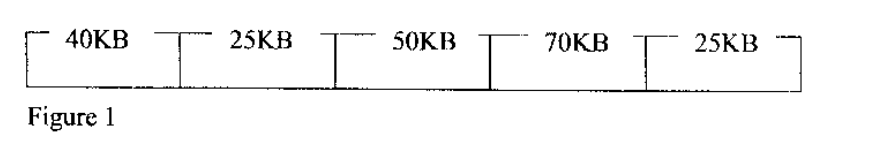

Operating Systems
Exam Code: 2920/105
Duration: 3 hours
Period: November 2013
Define each of the following terms as used in computer operating systems. (i) shell; A shell is a command-line interpreter or user interface in an operating system. It acts as an intermediary between the user and the operating system kernel, allowing users to execute commands, manage files, and interact with the system through textual commands. The shell interprets user commands and translates them into system calls that the kernel can understand and execute. Define each of the following terms as used in computer operating systems. (ii) system call. A system call is a request made by a user-level process to the operating system kernel to perform a specific task that requires privileged operations. It is the interface through which processes can request services from the kernel, such as file I/O, process creation, memory allocation, and network communication. System calls are essential for processes to interact with the operating system and access system resources. Define each of the following terms as used in computer operating systems. (iii) buffer A buffer is a region of memory used for temporary storage of data during data transfer operations, especially between different parts of a computer system or between devices. Buffers are used to handle differences in data transfer rates, optimize data flow, and improve efficiency. They are commonly used in I/O operations, network communication, and data processing. Explain each of the following Inter Process Communication methods: (i) semaphore; A semaphore is a synchronization primitive used for controlling access to shared resources in a concurrent system. It is an integer variable that, apart from initialization, is accessed only through two atomic operations: wait (P) and signal (V). Semaphores are used to manage critical sections and prevent race conditions by ensuring that only a limited number of processes can access a resource at any given time. Explain each of the following Inter Process Communication methods: (ii) signal. A signal is a software interrupt used in operating systems to notify a process of the occurrence of a particular event. Signals can be sent from the kernel to a process, or from one process to another. They are used for various purposes, such as handling errors, responding to user input (like Ctrl+C), or inter-process notification. When a process receives a signal, it can either handle it using a signal handler or perform a default action. With the aid of a diagram, describe the NTFS file system. NTFS (New Technology File System) is a proprietary file system developed by Microsoft, and is the primary file system for recent versions of Windows. It offers several improvements over older file systems like FAT32, including enhanced reliability, security, and features. Conceptual Diagram of NTFS Structure: Description of Key Components: Boot Sector: The first sector of an NTFS volume, containing the boot code used to start the operating system and metadata about the file system structure. Master File Table (MFT): The core component of NTFS. It is a database that contains metadata about every file and directory on the volume. Each entry in the MFT, called a File Record, stores attributes like file name, size, timestamps, permissions, and data block locations. The MFT is organized as an array of File Records. MFT Mirror: A backup copy of the first few entries of the MFT, used for redundancy and recovery in case of corruption in the primary MFT. System Files: Various metadata files used by NTFS to manage the file system, including log files for journaling, volume information, attribute definitions, and security descriptors. File Area: The remaining space on the volume, used to store the actual content of files and directories. NTFS uses clusters as the unit of allocation, and file data can be stored in contiguous or non-contiguous clusters. Key Features of NTFS: Journaling: Maintains a log of file system changes to ensure consistency and recoverability after system crashes. Security Descriptors: Supports detailed access control lists (ACLs) for file and directory permissions, enhancing security. Compression and Encryption: Provides built-in support for file compression and encryption. Large File and Volume Sizes: Supports very large files and volumes, overcoming limitations of older file systems. Describe single streaming batch processing as used in operating systems. Single streaming batch processing is a simple form of batch processing where jobs are processed sequentially, one after another, in a single stream. In this method, jobs are submitted to the system and processed in the order of submission, without any user interaction during processing. Once a job starts, it runs to completion before the next job in the queue is started. It is typically non-interactive and suitable for tasks that can be processed in a predefined sequence without manual intervention. Lara, a database administrator used each of the following file lock mechanisms in her design. Explain the result from each lock when enforced: (i) file lock; (i) File Lock: When a file lock is enforced on a file, it typically grants exclusive access to the process that holds the lock. Other processes are prevented from accessing the file in any way that could conflict with the lock holder's operations. The exact behavior depends on the type of file lock (e.g., exclusive or shared), but generally, a file lock ensures that only one process (or a controlled group of processes for shared locks) can operate on the file at a time, preventing data corruption and ensuring consistency. Lara, a database administrator used each of the following file lock mechanisms in her design. Explain the result from each lock when enforced: (ii) write lock. (ii) Write Lock: When a write lock is enforced on a file (or a portion of a file), it prevents other processes from obtaining a write lock on the same file (or overlapping portion). Processes might still be able to obtain read locks, depending on the specific locking mechanism, but exclusive write access is granted to the lock holder. This ensures that only one process can modify the file at any given time, preventing write-write conflicts and maintaining data integrity during updates. Other processes attempting to acquire a write lock will typically be blocked until the lock is released. Distinguish between coherency and inclusion as used in memory management. Cache Coherency: Cache coherency is concerned with maintaining consistency of data across multiple caches in a multi-processor system. When multiple processors have caches, and they share a common memory, it is possible for different caches to hold different, potentially outdated, copies of the same data. Cache coherency protocols ensure that when one processor modifies data in its cache, all other caches that hold a copy of that data are updated or invalidated to maintain a consistent view of memory across all processors. This is critical for correct parallel program execution. Cache Inclusion: Cache inclusion is a property of multi-level cache hierarchies. It dictates that the data stored in a smaller, faster cache (e.g., L1 cache) must also be present in the larger, slower cache that is higher up in the hierarchy (e.g., L2 cache). In other words, the content of the L1 cache is a subset of the content of the L2 cache, and so on for deeper cache levels. Cache inclusion simplifies cache management and coherency protocols, as it provides a containment relationship between cache levels. However, it can also lead to some redundancy and potentially reduced cache capacity utilization. Key Distinction: Coherency is about data consistency across *multiple caches* in a multiprocessor system, ensuring all processors see the same data. Inclusion is about the hierarchical relationship *between levels of cache* within a single processor or system, requiring data in faster caches to also be present in slower, higher-level caches. With the aid of diagrams, describe each of the following memory allocation techniques: (i) fixed partitioned allocation; (i) Fixed Partitioned Allocation: In fixed partitioned allocation, main memory is divided into a fixed number of partitions at system initialization. Each partition has a fixed size. When a process needs to be loaded into memory, it is allocated to a partition large enough to hold it. If a partition is larger than the process, the unused space within the partition is wasted (internal fragmentation). If no partition is large enough, the process cannot be loaded. Conceptual Diagram of Fixed Partitioned Allocation: Description: Memory is divided into static partitions of predefined sizes, typically at system boot time. Partitions can be of equal or unequal sizes. Each partition can hold one process at a time. When a process arrives, the operating system tries to find an empty partition large enough for it. If found, the process is loaded into that partition. If no suitable partition is available, the process must wait. Once a process finishes, the partition becomes available for another process. Internal fragmentation is a key issue, as processes smaller than the partition size waste memory within the partition. Advantages: Simple to implement, easy to manage. Disadvantages: Internal fragmentation, limits degree of multiprogramming due to fixed partition count, inefficient memory utilization if partition sizes are not well-matched to process sizes. With the aid of diagrams, describe each of the following memory allocation techniques: (ii) paged allocation. (ii) Paged Allocation: In paged allocation, both main memory and processes are divided into fixed-size blocks called pages (for processes) and frames (for main memory). Logical addresses are divided into page numbers and page offsets. A page table is used to map pages of a process to frames in main memory. Pages of a process can be non-contiguous in memory, allocated to any available frames. This eliminates external fragmentation. Conceptual Diagram of Paged Allocation: Description: Memory is divided into fixed-size frames, and logical address space of each process is divided into fixed-size pages. Page and frame sizes are equal (e.g., 4KB). A process's pages can be loaded into any available frames in memory. The page table, maintained by the operating system for each process, maps virtual page numbers to physical frame numbers. When the CPU generates a virtual address, it is translated to a physical address using the page table. No external fragmentation occurs as memory is allocated in frame units, and pages are of fixed size. Internal fragmentation can occur if a process's last page is not fully utilized. Advantages: Eliminates external fragmentation, allows non-contiguous allocation, efficient memory utilization compared to partitioning. Disadvantages: Page table overhead (memory and management), internal fragmentation within the last page, complexity in address translation. June came across the following file name extensions during a lesson. Identify the file type for each extension: (i) .bmp (ii) .xlsx (iii) .rar (i) .bmp: Bitmap Image File (ii) .xlsx: Microsoft Excel Open XML Spreadsheet File (iii) .rar: RAR Archive File (Compressed Archive) June came across the following file name extensions during a lesson. Identify the file type for each extension: (iv) .exe (iv) .exe: Executable File Jeremy prefers the online method when storing his company's files. Outline two reasons for his preference. Accessibility and Remote Access: Online storage enables access to files from anywhere with an internet connection, using various devices (computers, smartphones, tablets). This facilitates remote work, collaboration, and access to company data while traveling or from different locations. It enhances flexibility and accessibility for employees. Data Backup and Disaster Recovery: Online storage solutions often include automatic backup and data redundancy features. Files are typically stored in geographically distributed data centers, providing protection against data loss due to hardware failures, local disasters (fire, flood), or theft. This ensures business continuity and data security, offering a robust disaster recovery solution. Outline four criteria that could be used when choosing a scheduling algorithm for an operating system. CPU Utilization: Aim to maximize CPU utilization, keeping the CPU as busy as possible to execute processes. A good scheduling algorithm should minimize CPU idle time and ensure that the processor is actively working on tasks. Throughput: Maximize the number of processes completed per unit of time. Higher throughput indicates that the system is efficiently processing tasks. The scheduling algorithm should strive to complete as many jobs as possible in a given timeframe. Turnaround Time: Minimize the total time taken for a process to complete execution, from submission to completion. Shorter turnaround times improve user experience and system responsiveness. This includes waiting time, execution time, and I/O time. Response Time: Minimize the time it takes for a process to produce its first response, especially important for interactive systems. Quick response times enhance user satisfaction. This is particularly relevant for time-sharing systems where users expect immediate feedback. Purity prefers the command line user interface over the GUI for her computer. Explain three reasons for this preference. Efficiency and Speed: Command Line Interfaces (CLIs) are often more efficient and faster for many tasks, especially for experienced users. Commands can be executed quickly with minimal overhead, bypassing the graphical rendering and resource consumption of a GUI. For repetitive tasks or system administration, CLI commands can be significantly faster than navigating through graphical menus and windows. Scripting and Automation: CLIs are highly scriptable, allowing users to automate complex tasks by writing scripts (e.g., bash scripts, PowerShell scripts). These scripts can combine multiple commands and logic to perform batch operations, system maintenance, or customized workflows. Automation through scripting is much more powerful and flexible in a CLI compared to GUIs. Lower Resource Consumption: CLIs generally consume fewer system resources (CPU, memory, and disk space) compared to Graphical User Interfaces (GUIs). CLIs are text-based and do not require the overhead of rendering graphics, windows, and visual elements. This makes CLIs ideal for systems with limited resources or for tasks where resource efficiency is critical, such as servers or embedded systems. Using CLI can improve system performance and responsiveness, especially on older or less powerful hardware. Differentiate between reusable and consumable resources as used in inter-process communication. Reusable Resources: Reusable resources are resources that can be used by only one process at a time and can be reused by another process after the current process is finished using it. These resources are not depleted or destroyed by use. Examples include CPU time, memory, files, printers, and database connections. Processes request and are granted exclusive access to reusable resources, use them, and then release them, making them available for other processes. Improper management of reusable resources can lead to deadlocks if processes hold onto resources and prevent others from accessing them. Consumable Resources: Consumable resources are resources that are created by one process and consumed by another process. Once a consumable resource is used, it is no longer available. Examples include messages in a message queue, signals, interrupts, and data in a buffer. A producer process creates consumable resources, and a consumer process uses them up. Consumable resources are typically used for synchronization and communication between processes. Mismanagement of consumable resources can lead to process starvation if producers do not create enough resources for consumers or if resources are lost. Key Distinction: The key difference is in their lifecycle and usage. Reusable resources are persistent and shared among processes over time, while consumable resources are transient, created by one process and used up by another, serving as a means of communication or signaling between processes. Explain three reasons that could cause a process to be suspended. I/O Wait or Event Wait: A process may be suspended when it needs to perform an I/O operation (e.g., read from disk, receive network data) or wait for a specific event to occur (e.g., user input, signal from another process). During these wait states, the process cannot continue executing because it is waiting for an external operation to complete. The operating system suspends the process to free up the CPU for other ready processes and will resume it when the I/O operation is complete or the event has occurred. This is a common reason for process suspension in multitasking systems to improve CPU utilization. Preemption by Scheduler: In preemptive scheduling systems, the operating system can interrupt a running process and suspend it to allow another process to run. This is typically done based on scheduling algorithms (e.g., round robin, priority scheduling) to ensure fairness, responsiveness, or priority enforcement. Processes may be preempted when their time slice expires, a higher-priority process becomes ready, or to maintain system responsiveness. Suspension due to preemption is a normal part of process scheduling and multitasking. User Request or System Call: A process can be suspended due to an explicit request from the user or through a system call. For example, a user might pause a process using a command (e.g., Ctrl+Z in Unix-like systems), or a process might voluntarily suspend itself by making a system call (e.g., `sleep()` or `wait()`). User-initiated suspension can be for debugging, pausing execution, or managing process flow. System-call based suspension is often used for synchronization or when a process needs to wait for a specific condition before proceeding. List four examples of utility programs used in computers. Antivirus Software Disk Defragmentation Tool Backup and Restore Utility File Manager (e.g., Windows Explorer, Finder) Distinguish between spatial locality and sequential locality as used in memory management. Spatial Locality: Spatial locality refers to the tendency of a processor to access memory locations that are physically close to each other in memory. If a program accesses a particular memory location, there is a high probability that it will soon access nearby memory locations. This is often observed when accessing data structures like arrays or sequential blocks of code. Cache memory exploits spatial locality by fetching blocks of data (cache lines) that are larger than the immediate request, anticipating that nearby data will be needed soon. Sequential Locality (Temporal Locality): Sequential locality, more accurately termed temporal locality, refers to the tendency of a processor to re-access memory locations that have been recently accessed. If a program accesses a particular memory location at one point in time, there is a high probability that it will access the same location again in the near future. This is common in loops, function calls, and repeated use of variables. Cache memory leverages temporal locality by keeping recently accessed data in the cache, so that subsequent accesses to the same data are faster. Key Distinction: Spatial locality is about accessing *nearby* memory locations, while temporal locality is about *re-accessing* the *same* memory locations *over time*. Both types of locality are fundamental principles that cache memory and other memory management techniques exploit to improve performance by reducing memory access latency. Describe each of the following terms as used in file management: (i) alias file names; (i) Alias File Names: Alias file names, also known as shortcuts or links, are alternative names or pointers that refer to an existing file or directory. They provide a way to access a file using a different name or from a different location in the directory structure, without duplicating the file itself. Alias file names are used for convenience, organization, and to provide multiple access paths to the same data. Changes made through an alias affect the original file. Describe each of the following terms as used in file management: (ii) pathnames. (ii) Pathnames: Pathnames are strings that specify the location of a file or directory within a file system's directory hierarchy. A pathname describes the sequence of directories to traverse from a starting point (usually the root directory or the current working directory) to reach the target file or directory. Pathnames can be absolute (starting from the root) or relative (starting from the current directory) and use delimiters (like '/' in Unix or '\' in Windows) to separate directory names in the path. Joss used the RAID and disk caching to help improve the performance of the disk. Describe each of these techniques as used in file management. RAID (Redundant Array of Independent Disks): RAID is a data storage virtualization technology that combines multiple physical disk drives into a single logical unit for improved performance, redundancy, or both. Different RAID levels (RAID 0, 1, 5, 10, etc.) offer various combinations of striping (data distribution across disks for performance), mirroring (data duplication for redundancy), and parity (error correction). RAID can enhance disk I/O performance by parallelizing read/write operations across multiple disks and improve data reliability by providing fault tolerance in case of disk failures. RAID is used to boost disk subsystem performance and data availability. Disk Caching: Disk caching is a technique that uses a portion of fast memory (cache), typically RAM, to store frequently accessed data from the disk. When a read request is made, the system first checks the cache. If the data is found in the cache (cache hit), it is served from the faster cache memory, significantly reducing access time. If not found (cache miss), the data is read from the slower disk and also placed in the cache for future accesses (cache fill). Disk caching exploits temporal locality to improve disk access performance by reducing the number of physical disk I/O operations. It is a key technique for speeding up file system operations and application loading times. With the aid of a diagram, describe the structure of the I/O control system. The I/O control system in an operating system is structured in layers to manage communication between applications and hardware devices. It typically involves several layers of software and hardware components working together. Conceptual Diagram of I/O Control System Structure: Description of Layers: User-Level I/O: This is the highest layer, where user applications interact with the I/O system. Applications use system calls (e.g., `read()`, `write()`, `open()`) to request I/O operations in a device-independent manner. This layer provides a high-level abstraction of I/O operations. Kernel I/O Subsystem: This layer resides within the operating system kernel and provides core I/O services. It includes components like the file system, network stack, and device management. It translates user-level I/O requests into device-specific commands and manages buffering, caching, and scheduling of I/O operations. This layer provides device independence and resource management. Device Drivers: Device drivers are software modules that are specific to each type of hardware device. They act as an interface between the kernel I/O subsystem and the hardware controllers. Device drivers translate generic I/O requests from the kernel into device-specific commands that the hardware controller can understand. They handle low-level device control, interrupt handling, and data transfer protocols. Each device type typically requires its own driver. I/O Controllers: I/O controllers are hardware components that manage the physical I/O devices. Examples include disk controllers, network interface cards (NICs), and USB controllers. They interpret commands from device drivers and control the operation of the actual I/O devices. Controllers handle data transfer, error detection, and hardware-level device management. They communicate with the CPU and memory via system buses. I/O Devices: These are the physical hardware devices themselves, such as hard disks, network cards, keyboards, printers, etc. They perform the actual I/O operations (data storage, communication, input/output). Devices are controlled by I/O controllers based on commands from the device drivers. This layered structure provides modularity, device independence, and abstraction, making it easier to manage and extend the I/O system. Define each of the following terms as used in memory management: (i) thrashing; (i) Thrashing: Thrashing is a performance problem in virtual memory systems that occurs when a system spends most of its time paging data between main memory and secondary storage, rather than performing useful computation. It happens when the degree of multiprogramming is too high, and processes do not have enough frames in memory to meet their working set requirements. This leads to excessive page faults, disk I/O, and a significant decrease in system throughput and CPU utilization. The system becomes bogged down in paging activity. Define each of the following terms as used in memory management: (ii) starvation. (ii) Starvation: Starvation in operating systems, particularly in process scheduling and resource allocation, refers to a situation where a process is indefinitely denied access to the resources it needs to make progress, even though the resources are not deadlocked and are potentially available. Starvation can occur in priority scheduling if low-priority processes are continuously preempted by high-priority processes, or in resource allocation if a process is repeatedly passed over in favor of others. It results in indefinite postponement of a process's execution. With the aid of a diagram, describe the round robin scheduling algorithm as used in computer operating system. Round Robin Scheduling Algorithm: Round Robin (RR) is a preemptive CPU scheduling algorithm designed for time-sharing systems. It gives each process a fixed amount of CPU time, called a time slice or quantum. Processes are placed in a ready queue. The scheduler selects the first process from the ready queue, allocates the CPU to it for one time quantum. If the process does not complete within the time quantum, it is preempted and moved to the back of the ready queue. The scheduler then picks the next process from the front of the queue. This process repeats, giving each process a fair share of CPU time in a cyclic manner. Conceptual Diagram of Round Robin Scheduling: Description of Operation: Processes are maintained in a ready queue, typically a FIFO queue. The scheduler selects the process at the front of the queue and dispatches it to run on the CPU for a predefined time quantum (e.g., 10-100 milliseconds). If the process completes its execution within the time quantum, it voluntarily releases the CPU. If the process is still running when the time quantum expires, it is preempted (interrupted), its context is saved, and it is moved to the back of the ready queue. Then, the scheduler selects the next process from the front of the queue to run. This cycle repeats continuously. The time quantum is a critical parameter. If it's too large, RR approaches FCFS; if too small, context switching overhead becomes significant. Advantages: Fair allocation of CPU time to all processes, prevents starvation, relatively easy to implement, good for time-sharing systems, provides reasonable response times. Disadvantages: Performance depends heavily on the choice of time quantum, higher context switching overhead compared to FCFS, may have longer average turnaround time compared to algorithms that prioritize shorter jobs. Describe each of the following terms as used in process management: (0) race condition; (i) Race Condition: A race condition is a situation that occurs when the outcome of a computation depends on the unpredictable order of execution of processes or threads, especially when they are accessing shared resources. It arises when multiple processes access and manipulate shared data concurrently, and the final result depends on which process finishes its operation first. Race conditions can lead to inconsistent data, errors, and unpredictable behavior in concurrent systems. Synchronization mechanisms are needed to prevent race conditions. Describe each of the following terms as used in process management: (ii) critical section. (ii) Critical Section: A critical section is a segment of code in a process that accesses shared resources (e.g., shared variables, data structures, files, devices) that can be manipulated by other concurrent processes. To ensure data integrity and avoid race conditions, access to critical sections must be mutually exclusive, meaning that only one process can execute its critical section at any given time. Synchronization mechanisms like mutexes, semaphores, or monitors are used to protect critical sections and enforce mutual exclusion. During an operating system lesson the teacher addressed various functions of the software clock. Explain three such functions that the teacher could have discussed. Timekeeping and System Clock: The software clock is used to maintain the system's current time and date. It keeps track of elapsed time and provides time-related services to the operating system and applications. This includes setting and getting the system time, synchronizing with external time sources (e.g., NTP servers), and providing time-based information for timestamps, logs, and scheduling. Process Scheduling and Time Slicing: The software clock is crucial for time-based process scheduling algorithms, such as Round Robin. It generates periodic interrupts (timer interrupts) at regular intervals, which trigger the scheduler to preempt the currently running process and switch to another ready process. This time-slicing mechanism enables multitasking and fair CPU sharing among processes. The clock's interrupt frequency determines the granularity of time slices. Timeouts and Delays: The software clock is used to implement timeouts and delays in various system operations and applications. Timeouts are used to limit the waiting time for events or responses, preventing processes from hanging indefinitely (e.g., network timeouts, I/O timeouts). Delays are used to introduce pauses or timing control in program execution (e.g., `sleep()` function). The clock's timer functions are used to measure elapsed time and trigger actions after a specified duration. Define each of the following terms as used in operating systems: (i) device independence; (i) Device Independence: Device independence is a principle in operating system design that aims to allow user programs to interact with I/O devices without needing to know the specific details of the hardware. The operating system provides an abstract interface for I/O operations, so applications can perform I/O in a generic way, regardless of the type or characteristics of the underlying hardware devices. Device drivers handle the device-specific operations, providing a layer of abstraction. Define each of the following terms as used in operating systems: (ii) virtual device. (ii) Virtual Device: A virtual device is an abstraction of a physical hardware device, created by the operating system to provide enhanced functionality, sharing, or device independence. It is a logical device that may or may not have a direct one-to-one mapping to a physical device. Virtual devices can be used for various purposes, such as printer spooling (virtual printer), disk virtualization (virtual disk), or network virtualization (virtual network interface). They provide a higher-level interface and can manage access to underlying physical resources. Explain the circumstance under which each of the following disk system algorithms could be applicable: (i) first come first served; (i) First Come First Served (FCFS): FCFS disk scheduling algorithm is applicable in scenarios where simplicity and fairness are prioritized over performance optimization. It is straightforward to implement and ensures that disk requests are processed in the order they arrive. FCFS can be suitable for lightly loaded systems or where request arrival patterns are relatively random and not clustered. It is also useful as a baseline algorithm for comparison with more complex scheduling methods. However, FCFS is generally not optimal in terms of minimizing seek time and may lead to inefficient disk head movement. Explain the circumstance under which each of the following disk system algorithms could be applicable: (ii) shortest seek time first; (ii) Shortest Seek Time First (SSTF): SSTF disk scheduling algorithm is applicable when the primary goal is to minimize seek time and improve disk throughput. SSTF selects the disk request that requires the minimum seek distance from the current head position. It is effective in reducing average waiting time and improving overall disk performance, especially in systems with clustered disk requests. SSTF is suitable for systems where performance is critical and fairness is less of a concern. However, SSTF can lead to starvation for requests that are far from the current head position. Explain the circumstance under which each of the following disk system algorithms could be applicable: (iii) SCAN. (iii) SCAN Algorithm: The SCAN disk scheduling algorithm is applicable when a balance between performance and fairness is desired. SCAN moves the disk head in one direction, servicing requests along the way, and reverses direction when it reaches the end of the disk. SCAN provides better performance than FCFS and offers more fairness compared to SSTF, as it prevents starvation by servicing all requests in its path in each sweep. SCAN is suitable for general-purpose systems where reasonable performance and prevention of starvation are important. It is a good compromise between SSTF and FCFS. Distinguish between software interrupt and trap as used in operating systems. Software Interrupt: A software interrupt, also known as a synchronous interrupt or an exception, is an interrupt that is generated programmatically by software during the execution of a program. It is typically caused by an instruction within the program itself, such as a system call instruction (e.g., `syscall`, `int 0x80`) or a deliberate software instruction to trigger an interrupt. Software interrupts are used by user-level programs to request services from the operating system kernel (via system calls) or to handle specific software-defined events. They are synchronous because they occur at a predictable point in the program's execution flow. Trap (Exception): A trap, also called an exception, is a type of synchronous interrupt that is caused by an error condition or an exceptional event detected during program execution. Traps are typically generated by the CPU in response to events like division by zero, invalid memory access (segmentation fault), illegal instruction, or overflow conditions. Traps signal abnormal or error conditions that require special handling by the operating system. When a trap occurs, the CPU transfers control to an exception handler in the kernel to deal with the error. Traps are also synchronous as they occur as a direct result of executing a specific instruction that triggers the exceptional condition. Key Distinction: Both software interrupts and traps are synchronous interrupts initiated during program execution, but their purpose and origin differ. Software interrupts are intentionally triggered by programs to request OS services (system calls), while traps are triggered by the CPU in response to error or exceptional conditions encountered during program execution. Software interrupts are for normal service requests, whereas traps are for error handling and exception management. Explain the function of each of the following terms as used in memory management: (1) relocating loader; (i) Relocating Loader: A relocating loader is a type of loader in operating systems that is responsible for loading a program into memory and adjusting (relocating) the program's addresses so that it can run correctly at the loaded memory location. When a program is compiled or assembled, it is often generated with starting addresses relative to zero or a fixed address. The relocating loader modifies these addresses to match the actual memory address where the program is loaded, enabling the program to execute correctly regardless of its load address. Relocation is essential for dynamic loading and memory management in multiprogramming environments. Explain the function of each of the following terms as used in memory management: (ii) job control language; (ii) Job Control Language (JCL): Job Control Language (JCL) is a scripting language used in batch processing systems, primarily in mainframe environments, to control the execution of batch jobs. JCL scripts specify the sequence of programs to be executed, the resources required for each job step (e.g., input files, output files, memory), and control flow logic. JCL allows users to define and automate complex batch processing workflows. It is used to manage job submission, execution, and resource allocation in batch-oriented operating systems. Explain the function of each of the following terms as used in memory management: (iii) segmentation. (iii) Segmentation: Segmentation is a memory management technique that divides a process's logical address space into logical units called segments. Segments typically correspond to logical program units like code, data, and stack. Each segment is of variable size and can be placed anywhere in physical memory. Segmentation provides a structured view of memory, facilitates memory protection and sharing at the segment level, and supports logical organization of programs. However, it can suffer from external fragmentation and requires segment tables for address translation. Define each of the following terms as used in process management: (i) Dispatch latency; (i) Dispatch Latency: Dispatch latency is the time it takes for the scheduler to stop one process and start running another process. It is the delay between the context switch and the start of execution of the newly scheduled process. Dispatch latency is a critical factor in real-time systems, where minimizing response time and ensuring timely process execution are essential. Lower dispatch latency leads to better system responsiveness and more predictable real-time behavior. Define each of the following terms as used in process management: (ii) Reschedule latency. (ii) Reschedule Latency: Reschedule latency is the total time taken for the operating system to respond to an event and begin executing the appropriate handler. It encompasses the time from the occurrence of an event (e.g., interrupt, system call) to the point when the scheduler starts executing a new process or thread in response to that event. Reschedule latency includes interrupt handling time, context switching time, and scheduler decision time. It is a measure of the overall responsiveness of the operating system to events that require process rescheduling. Joan came across the following DOS commands when revising for her operating systems examination. CD, DIR, FORMAT, BACKUP, RESTORE, CLS. Categorize each of them as either external or internal commands. Internal Commands (Built-in to command processor): CD (Change Directory) DIR (Directory Listing) CLS (Clear Screen) External Commands (Separate executable files): FORMAT (Disk Formatting) BACKUP (File Backup) RESTORE (File Restore) Differentiate between independent and cooperating process as used in process management. Independent Processes: Independent processes are processes that do not share data or resources with other processes and do not affect or get affected by the execution of other processes in the system. They operate in isolation, with their own private address space and resources. The execution of an independent process is deterministic and predictable, as it is not influenced by external factors from other processes. Examples include simple command-line utilities or standalone applications that do not communicate with other programs. Cooperating Processes: Cooperating processes are processes that are designed to share data or resources with other processes and can affect or be affected by the execution of other processes. They need to communicate and synchronize their actions to achieve a common task or goal. Cooperating processes can share memory, files, or communicate through inter-process communication (IPC) mechanisms like messages, pipes, or shared memory. Cooperation is essential for complex applications, client-server systems, and parallel processing. However, it introduces challenges related to synchronization, data consistency, and potential race conditions or deadlocks. Key Distinction: The primary difference is in their interaction and resource sharing. Independent processes operate in isolation and do not interact, while cooperating processes share resources and communicate to work together, requiring synchronization and coordination. Differentiate between each of the following replacement policies as used in memory management: (i) least recently used; (i) Least Recently Used (LRU): Least Recently Used (LRU) is a page replacement policy that replaces the page that has not been used for the longest period in the past. LRU assumes that pages that have not been accessed recently are less likely to be accessed in the near future (based on temporal locality). LRU requires keeping track of the access history of pages, typically using counters or a stack. When a page fault occurs, the page with the oldest last access time is evicted. LRU is effective in reducing page faults but can be complex and costly to implement due to the overhead of tracking page access history. Differentiate between each of the following replacement policies as used in memory management: (ii) not recently used. (ii) Not Recently Used (NRU): Not Recently Used (NRU) is a page replacement policy that replaces a page that is not recently used. NRU is a simpler approximation of LRU and is easier to implement. NRU classifies pages into categories based on their reference bit and modified bit. Pages are considered "not recently used" if their reference bit is not set (indicating they haven't been referenced recently). When a page fault occurs, NRU selects a page to replace based on a priority order, favoring pages that are both not recently used and not modified. NRU has lower overhead than LRU but may have a higher page fault rate. During an operating systems class, Peter came across the following tile attributes. Explain the function of each of the attributes. (i) archive; (i) Archive Attribute: The archive attribute (often represented as 'A' or 'archive bit') is a file attribute used to indicate whether a file has been modified since the last backup. When a file is created or modified, the archive attribute is set (turned on). Backup software typically clears (turns off) the archive attribute after backing up the file. This attribute is used by incremental backup strategies to identify files that need to be backed up because they have been changed since the last backup operation. It helps optimize backup processes by only backing up modified files. During an operating systems class, Peter came across the following tile attributes. Explain the function of each of the attributes. (ii) hidden; (ii) Hidden Attribute: The hidden attribute is a file attribute that makes a file or directory invisible or less visible to users in standard file listings and graphical interfaces. Files with the hidden attribute set are typically not displayed by default in file explorers or directory listings, unless the user explicitly enables the option to show hidden files. The hidden attribute is used to hide system files, configuration files, or files that users are not intended to directly access or modify, helping to reduce clutter and prevent accidental changes to important files. During an operating systems class, Peter came across the following tile attributes. Explain the function of each of the attributes. (iii) system. (iii) System Attribute: The system attribute is a file attribute that marks a file as a critical system file. Files with the system attribute set are typically essential for the operating system's proper functioning. Like hidden files, system files are usually not displayed by default and are protected from accidental deletion or modification. The system attribute indicates that the file is an integral part of the operating system and should not be tampered with by users. Modifying or deleting system files can lead to system instability or failure. Define each of the following terms as used in operating systems: (i) address translation; (i) Address Translation: Address translation, also known as address mapping, is the process of converting a virtual address to a physical address in memory management systems that use virtual memory. The CPU generates virtual addresses, which are logical addresses used by processes. The memory management unit (MMU) in the hardware, with the help of the operating system, translates these virtual addresses into physical addresses, which correspond to the actual locations in physical RAM. Address translation is essential for virtual memory, memory protection, and address space management. Define each of the following terms as used in operating systems: (ii) address exception. (ii) Address Exception: An address exception, also known as a memory access violation or a page fault in virtual memory systems, is an exception that occurs when a process attempts to access a virtual memory address that is invalid or not currently mapped to physical memory. This can happen if the virtual address is outside the process's allocated address space, refers to a protected memory region, or corresponds to a page that is not present in physical RAM (and needs to be fetched from disk). Address exceptions are handled by the operating system, which may terminate the process (in case of invalid access) or handle page faults by loading the required page from secondary storage into memory. With the aid of a diagram, describe the message passing as used in inter process communication. Message Passing for Inter-Process Communication (IPC): Message passing is an inter-process communication (IPC) mechanism where processes communicate by sending and receiving messages. Processes do not share memory directly. Communication is achieved through system calls provided by the operating system kernel. Messages are typically sent through communication channels or queues managed by the kernel. Message passing can be synchronous (blocking send/receive) or asynchronous (non-blocking send/receive). Conceptual Diagram of Message Passing: Description of Operation: Send Operation: A sender process (e.g., Process A) prepares a message containing data to be communicated and uses a send system call to send the message. The message is passed to the operating system kernel, which places it in a message queue or channel associated with the destination process (e.g., Process B). Receive Operation: A receiver process (e.g., Process B) uses a receive system call to retrieve messages. The kernel checks the message queue for messages addressed to the receiver process. If a message is available, the kernel retrieves it from the queue, copies the message data to the receiver process's address space, and returns control to the receiver process. If no message is available, the receiver process may be blocked (in synchronous receive) or continue execution (in asynchronous receive). Key Features: No shared memory, communication via messages, kernel mediates communication, can be synchronous or asynchronous. Message passing is suitable for both shared-memory and distributed systems and provides a structured and controlled way for processes to exchange information. During revision for an operating systems paper, ken came across the term metaphors. Outline two functions of this facility. Simplifying User Interaction and Understanding: Metaphors in operating systems, especially in user interfaces (GUIs), are used to represent complex concepts and functionalities in a more intuitive and user-friendly way. By using familiar real-world analogies (like "desktop," "folder," "trash can," "windows"), metaphors make it easier for users to understand and interact with abstract computer concepts. They reduce the cognitive load and learning curve for users, especially for non-technical users, by relating unfamiliar digital entities to recognizable physical objects and actions. Enhancing Usability and Learnability: Metaphors contribute to improved usability and learnability of operating systems. They provide a consistent and predictable mental model for users to navigate and operate the system. By leveraging existing knowledge and experiences from the real world, metaphors make it easier for users to discover and use system features. They promote intuitive interaction, reduce the need for extensive training, and make the system more accessible to a wider range of users. Metaphors help bridge the gap between the technical complexity of the operating system and the user's conceptual understanding. Figure I shows a variable memory partition of the sizes in the order as indicated.  Assume that a new process of size 42KB is to be loaded in the partition, use sketch diagrams to show how the operating system would fit the new process using each of the following placement methods: (i) best fit method; (ii) worst fit method; (iii) first fit method. (i) Best Fit Method: The best fit method selects the smallest partition that is large enough to accommodate the process. In this case, the partitions are 40KB, 25KB, 50KB, 70KB, 25KB. The 42KB process can fit in the 50KB and 70KB partitions. The 50KB partition is the best fit as it leaves the smallest remaining fragment (8KB). Diagram for Best Fit: (ii) Worst Fit Method: The worst fit method selects the largest available partition to allocate the process. In this case, the largest partition is 70KB. Allocating the 42KB process to the 70KB partition leaves the largest remaining fragment (28KB). Diagram for Worst Fit: (iii) First Fit Method: The first fit method selects the first partition encountered that is large enough to hold the process. Scanning the partitions in order (40KB, 25KB, 50KB, 70KB, 25KB), the first partition large enough is the 50KB partition. Diagram for First Fit:1. (a) (i) (2 marks)
Answer
1. (a) (ii) (2 marks)
Answer
1. (a) (iii) (2 marks)
Answer
1. (b) (i) (2marks)
Answer
1. (b) (ii) (2 marks)
Answer
1. (c) (i) (4 marks)
Answer
+---------------------+
| Boot Sector | (Contains boot code and metadata)
+---------------------+
| MFT (Master | (Main file table, index of all files and directories)
| File Table) |
+---------------------+
| MFT Mirror | (Backup of critical MFT entries for redundancy)
+---------------------+
| System Files | (Metadata files like log files, volume info)
+---------------------+
| File Area | (Space for file and directory content)
+---------------------+
1. (c) (ii) (2 marks)
Answer
1. (d) (i) (2 marks)
Answer
1. (d) (ii) (2 marks)
Answer
2. (a) (4 marks)
Answer
2. (b) (i) (4 marks)
Answer
+-------------------+-------------------+-------------------+-------------------+
| Partition 1 (Size S1)| Partition 2 (Size S2)| Partition 3 (Size S3)| Partition 4 (Size S4)| ...
+-------------------+-------------------+-------------------+-------------------+
| Process A | Process B | Empty | Process C | ...
+-------------------+-------------------+-------------------+-------------------+
2. (b) (ii) (4 marks)
Answer
Process Address Space Main Memory (Physical Address Space)
+----------+ +----------+
| Page 0 | | Frame 0 |
+----------+ +----------+
| Page 1 | ---- Page Table ----> Frame 3
+----------+ +----------+
| Page 2 | | Frame 1 |
+----------+ ... +----------+
| Page 3 | ---- Page Table ----> Frame 5
+----------+ +----------+
| Frame 2 |
+----------+
| Frame 3 | <--- Page 1
+----------+
| Frame 4 |
+----------+
| Frame 5 | <--- Page 3
+----------+
...
2. (c) (3 marks)
Answer
2. (c) (iv) (1 mark)
Answer
2. (d) (4marks)
Answer
3. (a) (4 marks)
Answer
3. (b) (6 marks)
Answer
3. (c) (4 marks)
Answer
3. (d) (6 marks)
Answer
4. (a) (i) (2 marks)
Answer
4. (a) (ii) (4 marks)
Answer
4. (b) (i) (2 marks)
Answer
4. (b) (ii) (2 marks)
Answer
4. (c) (4 marks)
Answer
4. (d) (6 marks)
Answer
+-----------------------+ User Applications
| User-Level I/O | (e.g., File I/O, Network Sockets)
+-----------------------+
^ System Calls
|
+-----------------------+ Operating System Kernel
| Kernel I/O Subsystem | (e.g., File System, Network Stack)
+-----------------------+
^ Device Driver Interface
|
+-----------------------+ Device Drivers
| Device Drivers | (Specific to Hardware Devices)
+-----------------------+
^ Hardware Commands
|
+-----------------------+ I/O Hardware Controllers
| I/O Controllers | (e.g., Disk Controller, Network Interface Card)
+-----------------------+
^ Physical Signals
|
+-----------------------+ I/O Devices
| I/O Devices | (e.g., Hard Disk, Network Card, Keyboard)
+-----------------------+
5. (a) (i) (2 marks)
Answer
5. (a) (ii) (2 marks)
Answer
5. (b) (6 marks)
Answer
Ready Queue (FIFO)
+---------+ +---------+ +---------+ +---------+
| Process A |-->| Process B |-->| Process C |-->| Process D |--> ...
+---------+ +---------+ +---------+ +---------+
^ |
| v
+---------------------------------------+
CPU Scheduler
(Time Quantum)
5. (c) (i) (2 marks)
Answer
5. (c) (ii) (2 marks)
Answer
5. (d) (6 marks)
Answer
6. (a) (i) (2 marks)
Answer
6. (a) (ii) (2 marks)
Answer
6. (b) (i) (2 marks)
Answer
6. (b) (ii) (2 marks)
Answer
6. (b) (iii) (2 marks)
Answer
6. (c) (4 marks)
Answer
6. (d) (i) (2 marks)
Answer
6. (d) (ii) (2 marks)
Answer
6. (d) (iii) (2 marks)
Answer
7. (a) (i) (2 marks)
Answer
7. (a) (ii) (2 marks)
Answer
7. (b) (i) (3 marks)
Answer
7. (b) (ii) (3 marks)
Answer
7. (c) (i) (2 marks)
Answer
7. (c) (ii) (2 marks)
Answer
7. (d) (i) (2 marks)
Answer
7. (d) (ii) (2 marks)
Answer
7. (d) (iii) (2 marks)
Answer
8. (a) (i) (2 marks)
Answer
8. (a) (ii) (2 marks)
Answer
8. (b) (3 marks)
Answer
Process A Operating System Kernel Process B
+---------+ +-----------------------+ +---------+
| | Send | | Receive | |
| +----------->| Message Queue/Channel |<-----------+ |
| | | | | |
+---------+ +-----------------------+ +---------+
(Manages Messages)
8. (c) (4 marks)
Answer
8. (d) (9 marks)

Answer
Initial Partitions: [40KB] [25KB] [50KB] [70KB] [25KB]
Free Free Free Free Free
Process Size: 42KB
Best Fit Allocation: [40KB] [25KB] [50KB] [70KB] [25KB]
Free Free Used Free Free
Process
[42KB]
Fragment: 50KB - 42KB = 8KB
Initial Partitions: [40KB] [25KB] [50KB] [70KB] [25KB]
Free Free Free Free Free
Process Size: 42KB
Worst Fit Allocation:[40KB] [25KB] [50KB] [70KB] [25KB]
Free Free Free Used Free
Process
[42KB]
Fragment: 70KB - 42KB = 28KB
Initial Partitions: [40KB] [25KB] [50KB] [70KB] [25KB]
Free Free Free Free Free
Process Size: 42KB
First Fit Allocation:[40KB] [25KB] [50KB] [70KB] [25KB]
Free Free Used Free Free
Process
[42KB]
Fragment: 50KB - 42KB = 8KB